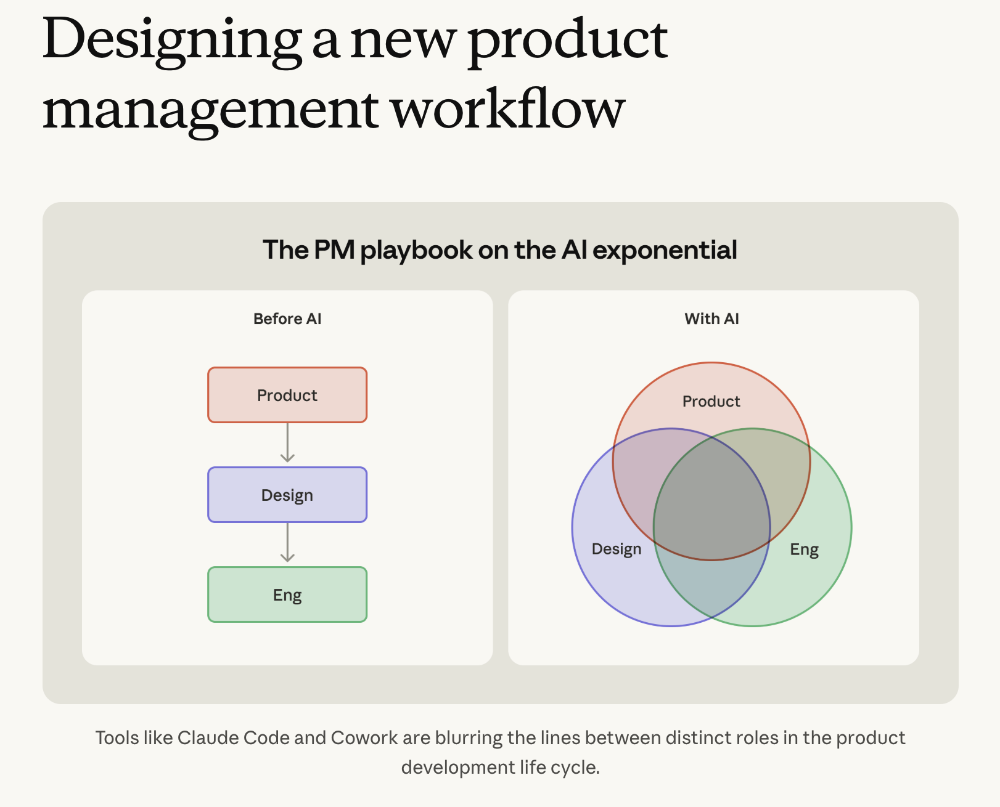
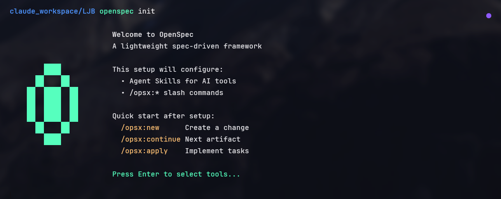
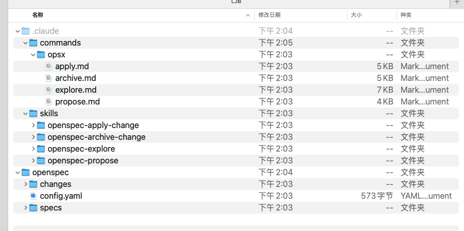
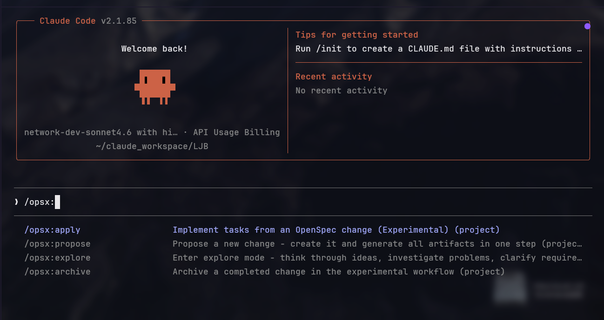
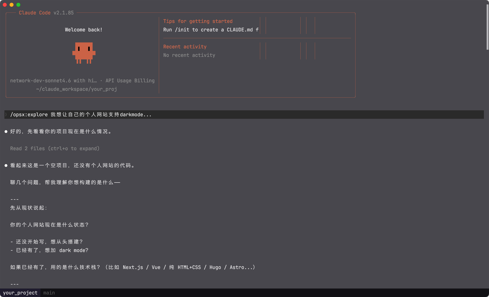
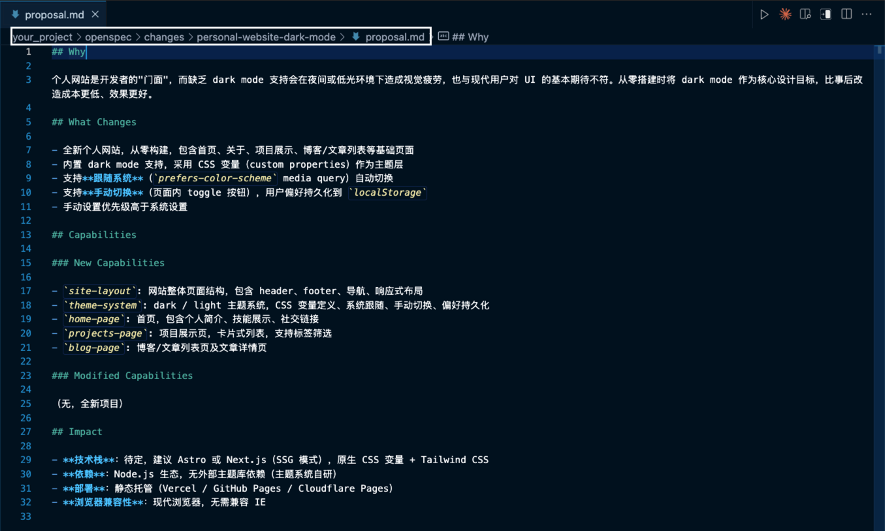
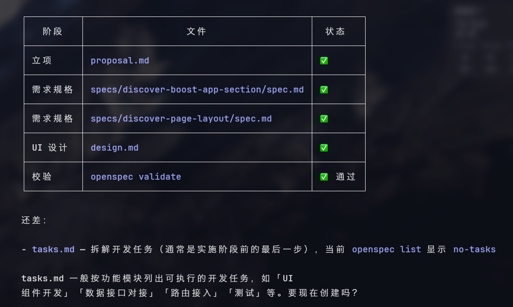

强烈推荐去读一下 Claude PM 负责人写的这篇文章：Product Management on the AI Exponential。里面有一张图，是这篇笔记的起点。

新的 PM Workflow 全景图
四种开发模式的演变
AI 爆发之前，我们有两种主流开发方式：
- 瀑布开发适合大项目，周期长，需求锁死再动工
- 敏捷开发快速交付，迭代验证，适应变化
AI 爆发之后，我们迎来了新的工作流：
- Vibe Coding凭感觉和 AI 聊，直接出代码
- Spec Coding ★我们的选择——先写规格，再让 AI 实现
Vibe Coding 快，但是——AI 自由发挥很容易跑偏，边界模糊，后期返工贵。Spec Coding 的核心思路是：在开发前，把功能边界、输入输出、错误处理、性能要求都想清楚，给 AI 一份"合同"，而不是让它猜你想要什么。
OpenSpec：帮你生成完整规格文档的工具
项目地址：github.com/Fission-AI/OpenSpec
选它的几个原因：
- →fluid not rigid — 灵活而非僵化，不强迫你按固定格式走
- →iterative not waterfall — 迭代而非瀑布，边聊边完善
- →easy not complex — 几个命令就能上手
- →brownfield friendly — 老项目也能用，不是只针对新项目
- →scalable — 个人项目到企业项目都适用
安装
需要 Node.js 20.19.0 或以上。
# 全局安装
npm install -g @fission-ai/openspec@latest
# 进入你的项目目录，初始化
cd your-project
openspec init最简单的一次完整流程长什么样
三个核心文档
OpenSpec 的内容分两个目录：specs（已归档规格，现有系统的真相来源）和 changes（进行中的变更）。
├── specs/
│ ├── auth/ # 认证领域规格
│ ├── payments/ # 支付领域规格
│ └── ui/ # UI 领域规格
└── changes/
└── dark-mode-support/
├── proposal.md # 提案（为什么、范围）
├── specs/ # 增量规格
├── design.md # UI 与技术方案
└── tasks.md # 任务清单
三个核心文档各司其职：
proposal.md 回答"做什么、为什么做"——背景动机、变更范围、影响模块。是整个 change 的立项文件，对齐目标与边界用的。
spec.md 回答"必须满足什么"——用 SHALL 语句写可验证的需求，不关心怎么实现，只关心行为是否正确。
design.md 回答"怎么做"——UI 原型、交互细节、技术方案。
PM 实战工作流（7 步）
推荐环境：Claude Code（以下简称 cc）
1初始化 OpenSpec
# 进入项目工作路径
cd your_project
# 初始化 openspec
openspec init
执行 openspec init
执行后，目录下会出现 openspec 相关的命令行和基本目录结构，cc 会话里也能看到已支持的 openspec 技能列表。

初始化后生成的目录结构

cc 会话中可见的 openspec 技能
如果是已有项目，最好先拉到最新代码，通过 AI 根据现有功能构建初版规格；新项目直接 init 就行。
2Explore：方案发散与确定
cd your_project
claude
# 在 cc 对话中
/opsx:explore 我准备做一个 xx 功能...
Explore 模式对话示例
可以持续聊，规定好细节、边界和重点。有个小技巧：提前把原型图路径告诉 cc 去分析，回答会稳很多。觉得聊得差不多了，进入下一步。
3生成 proposal.md
有三种方式，推荐前两种：

proposal.md 内容示例
4生成 spec.md / design.md / tasks.md
proposal.md 完成后，cc
会随时引导你去补全剩下的文件。也可以直接用
/opsx:design 触发。
5原型图生成（可选）
两条路：
- 先自己画好，在 Explore 阶段直接带入
- 先完成 proposal / design / spec.md，再通过 Figma MCP 生成原型图
6产品侧内容审核 ⭐
审核的内容包括：
proposal.mdspec.md-
design.md（UI 设计部分）
有不符合预期的，直接改文件，或者通过 cc 会话调整都行。

审核调整后的 openspec 状态
7归档与追踪
内容打包，上传到研发提供的项目仓库维护就好。
Spec Coding 不是在给 AI 加限制，是在给整个团队省时间——明确说清楚一次，比反复对齐十次要划算。